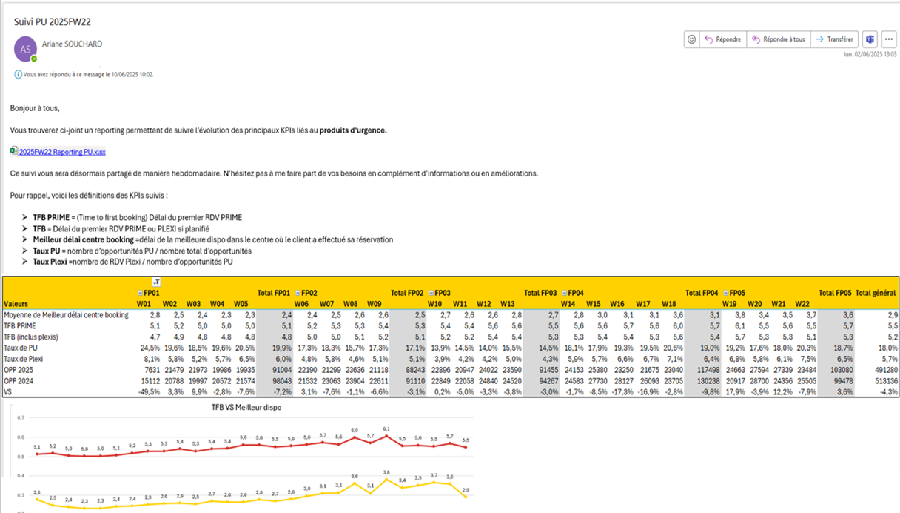
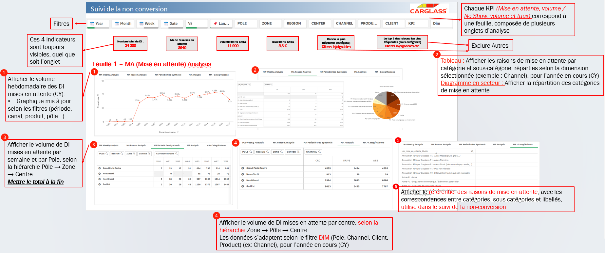
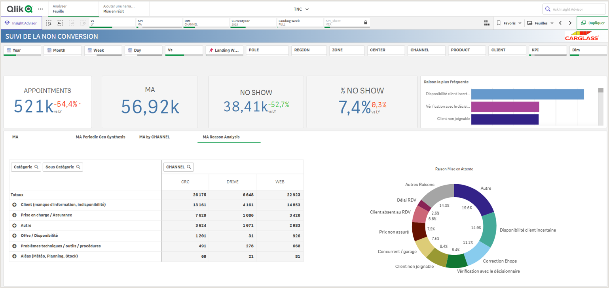

Stage chez Carglass – Business Data Analyst
Période : 30 Mars – 20 juin 2025
Encadrement : Équipe Performance Opérationnelle – DSPC
Objectifs du stage
- Analyser les performances commerciales de l'entreprise
- Créer des outils de suivi visuel pour faciliter la prise de décision
- Comprendre pourquoi certains clients n’allaient pas jusqu’à l’intervention
Missions réalisées avant le tableau de bord
- Nettoyage automatique de fichiers de suivi hebdomadaire
- Calcul de taux de transformation entre contact client et intervention réalisée
- Analyse des produits urgents (vitres cassées, impactables rapidement)
- Comparaison des performances entre 2024 et 2025 selon les canaux, produits ou zones
- Contrôle de la cohérence entre les canaux d’entrée (web, téléphone, drive...) et les activités enregistrées

Extrait réel d’un mail envoyé chaque semaine avec les analyses : performances par canal, nombre d’interventions, causes de blocage et recommandations pour les équipes réseau.
Conception d’un tableau de bord pour le suivi de la non-conversion
Une partie centrale de mon stage a consisté à créer un tableau de bord interactif dans Qlik Sense, destiné à analyser les cas où une opportunité de vente ne se transforme pas en intervention. L’objectif était d’aider les équipes à mieux comprendre les causes de ces situations et à agir dessus.
Deux grands cas de non-conversion
- La mise en attente : le client souhaite un rendez-vous, mais celui-ci ne peut être fixé immédiatement (ex. : produit manquant, dossier incomplet, client injoignable). Sans relance, ces demandes restent souvent sans suite.
- Le no-show : le client a pris rendez-vous mais ne se présente pas à la date prévue, sans prévenir. Cela engendre une perte directe de productivité et désorganise les plannings.
Structure du tableau de bord
Le tableau de bord a été organisé en deux volets distincts :
- Une vue dédiée aux mises en attente, avec des filtres (produit, centre, canal, semaine...) et des graphiques sur les causes principales
- Une vue dédiée aux annulations critiques, incluant des comparaisons dans le temps, des zones les plus concernées, et des tendances hebdomadaires

Version initiale de la maquette – en phase de conception

Version actuelle du tableau de bord en production
Outils utilisés
- Qlik Sense – Conception de tableaux de bord interactifs
- Power Query – Nettoyage automatisé de fichiers Excel
- SQL / Excel – Requêtes et analyse de données
- Outlook / Teams – Communication avec les équipes
Compétences développées
- Création d’indicateurs compréhensibles et pertinents
- Visualisation de données pour le pilotage opérationnel
- Collaboration interservices (digital, commerce, performance...)
- Analyse rigoureuse de situations métiers concrètes
Liens avec les compétences du BUT SD
- Recueillir et préparer les données : nettoyage avec Power Query, structuration avec SQL et Excel
- Analyser les données : création de KPIs, taux de transformation, analyses comparatives
- Restituer les résultats : création de dashboards Qlik, rédaction de synthèses, diffusion hebdomadaire
- Conduire un projet data : gestion du planning, échanges métiers, mise en production d’un outil décisionnel
Bilan
Ce stage m’a permis de participer à toutes les étapes d’un projet décisionnel : compréhension du besoin métier, traitement des données, création d’analyses visuelles, et restitution aux équipes. J’ai pu allier technique et compréhension métier, avec un impact direct sur les actions des équipes de terrain.